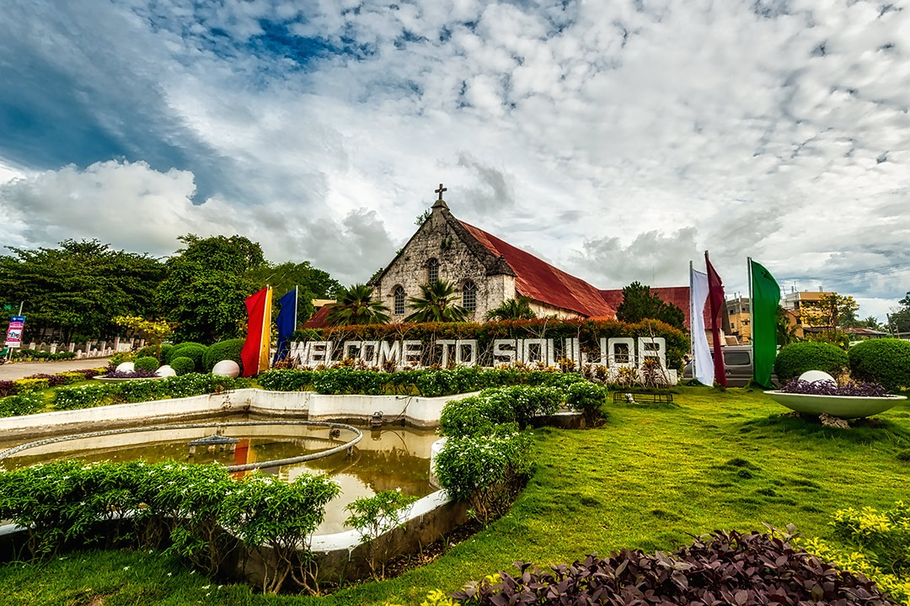

E8F3D6
SIQUIJOR

The Island of Siquijor is known to many as the mystical island of the Philippines. The name of the island has changed a few times though history though.
The island’s native name used to be ´Katagusan´, from tugas, the molave trees that cover the hills. Because of the molave trees and the fireflies in them, the island was earlier poetically known to the spaniards as Isla del Fuego – The Island of Fire.
Siquijor – The island’s present name, is claimed to be after King Kihod, a legendary ruler in power when the Spanish explorers arrived. When the Spaniards discovered the island they were alledgedly greeted by this King Kihod,
who presented himself with these words ‘si Kihod’ (I am Kihod) The spaniards mistakingly thinking that he was talking about the island adopted the name Sikihod which later changed to Siquijor, as it was easier to pronounce.
A more down to earth explanation of the name, is that it comes from the native term quidjod which means the tide is going out.
In the late 1800s, Siquijor fell under the governance of Bohol before becoming part of Negros Oriental. During the World War II, Siquijor was occupied by the Japanese Imperial Forces but
American influence still prevailed. Finally in 1971, Siquijor became an independent province
FACTS ABOUT SIQUIJOR
Known as the Mystic Island of Central Visayas, Siquijor is the southernmost island in the Visayan Island Group.
It is about 30 kilometers southeast of Negros Island and about 50 kilometers from the closest point of northwestern Mindanao.
It is composed of six municipalities namely Enrique Villanueva, Larena, Lazi, Maria, San Juan and Siquijor.
During the Spanish time, the island was called Isla de Fuegos or Island of Fire. The reason for this is that Spaniards who were exploring the Visayas area at that time noticed that the
island is covered with twinkling lights during night time. But in reality, these were just fireflies covering the molave trees which are said to be their home.
Siquijor is known throughout the country for its unique healing arts. Its centuries old tradition of concocting local potions is still being practiced and used as alternative medicine.
Every year, traditional healers would gather in the island to “renew” their connection with nature and put together a fresh brew of local potion.
BACK TO THE HOMEPAGE